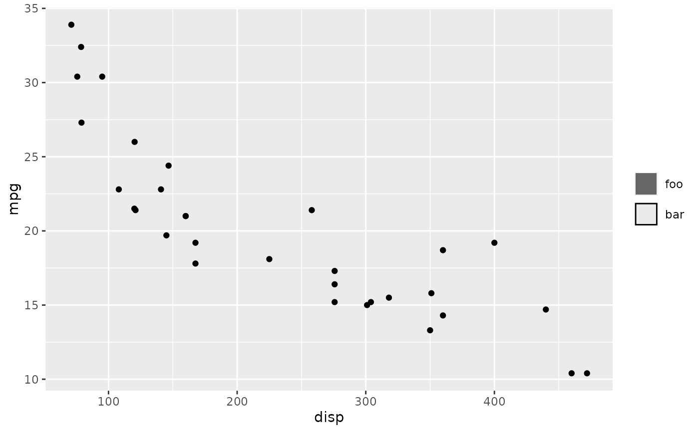
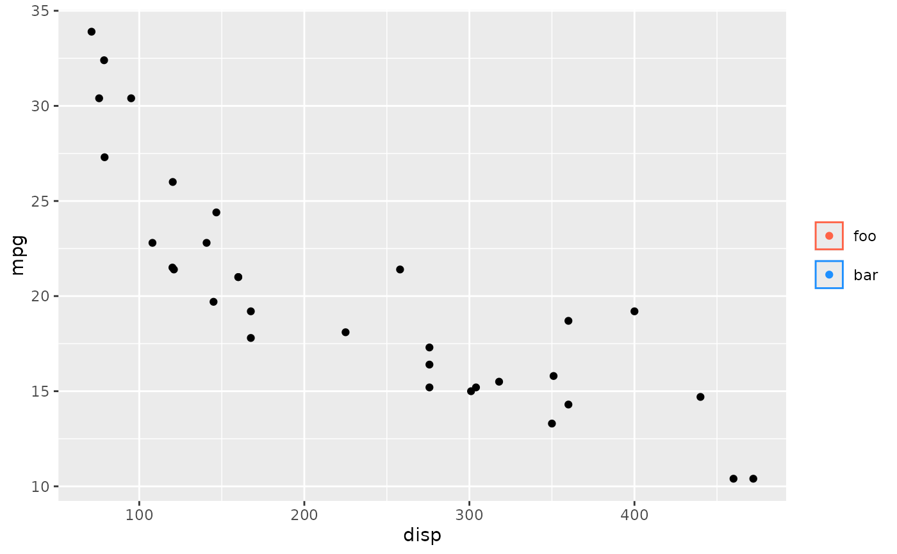

![[Experimental]](figures/lifecycle-experimental.svg)
This is a guide that displays user-defined keys independent of scales. It should only be used as a last resort when struggling to format a conventional legend.
Usage
guide_legend_manual(
labels,
...,
layers = list(geom_point()),
title = NULL,
legend_args = list()
)Arguments
- labels
Labels to display next to the keys. Can be a
<character>or<expression>vector to set labels, orNULLto draw no labels.- ...
Arguments interpreted as aesthetics. For example:
colour = "red". The aesthetics must have the same size as thelabelsargument, or have size 1. These aesthetics may be overruled by fixed aesthetics set in thelayersargument.- layers
A
<list>of layers (<LayerInstance>objects) created by thegeom_*()orstat_*()family of functions. These layers are used for theirkey_glyphdrawing functions, as well as to populate default aesthetics. Any fixed aesthetics provided to these layers overrule aesthetics passed to the...argument.- title
One of the following to indicate the title of the guide:
A
<character[1]>or<expression[1]>to set a custom title.NULLto not display any title.
- legend_args
A
<list>of arguments passed on toguide_legend_base().
Details
Because this guide is not tied to a scale, it can be given an arbitrary name
in guides(); as long as it doesn't clash with other aesthetics.
See also
Other standalone guides:
guide_axis_base(),
guide_axis_dendro(),
guide_axis_nested(),
guide_axis_plot(),
guide_circles(),
guide_colbar(),
guide_colring(),
guide_colsteps(),
guide_legend_base(),
guide_legend_cross(),
guide_legend_group()
Other legend guides:
guide_legend_base(),
guide_legend_cross(),
guide_legend_group()
Examples
# A standard plot
p <- ggplot(mtcars, aes(disp, mpg)) +
geom_point()
# Typical usage: set `label` and some aesthetics
p + guides(
some_name = guide_legend_manual(
label = c("foo", "bar"),
colour = c(NA, "black"),
fill = c("grey40", NA),
layers = geom_col()
)
)

# Alternative: use `layers` to set aesthetics
p + guides(
some_name = guide_legend_manual(
label = c("foo", "bar"),
layers = geom_col(
# Must match length of `label`
colour = c(NA, "black"),
fill = c("grey40", NA)
)
)
)
# You can use >1 layer
p + guides(
some_name = guide_legend_manual(
label = c("foo", "bar"),
colour = c("tomato", "dodgerblue"),
fill = NA,
layers = list(geom_col(), geom_point())
)
)
